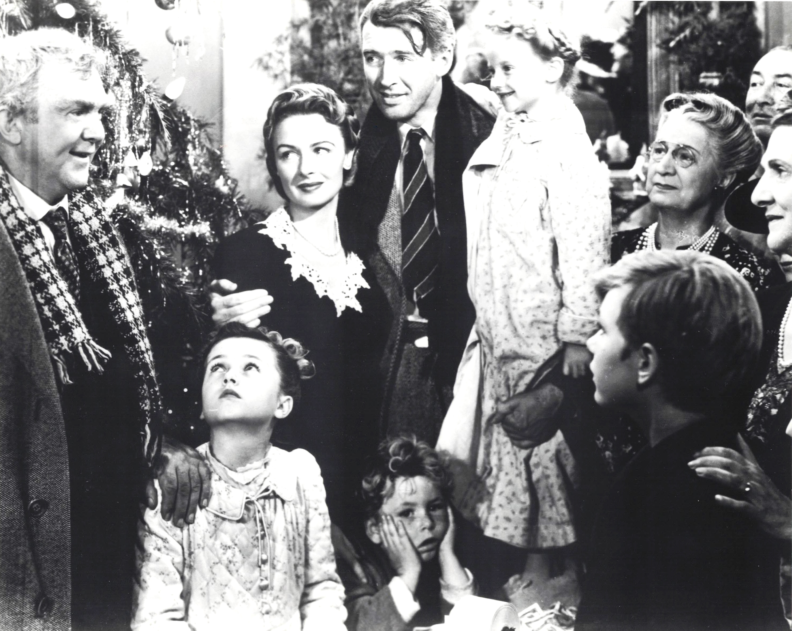

Product No. HEC-0039
$16.99
Shipping: $8.95
Description
8x10 B&W photograph
Full Description
"It's a Wonderful Life" is a 1946 American Christmas fantasy drama directed by Frank Capra and starring James Stewart, Donna Reed, Lionel Barrymore, Thomas Mitchell, and Henry Travers. The film has become one of the most beloved classics in American cinema. James Stewart stars as George Bailey, a good-hearted man from the small town of Bedford Falls who repeatedly sacrifices his own dreams in order to help his family, friends, and community. After a financial crisis threatens everything he has worked for, George becomes overwhelmed and wishes that he had never been born. His guardian angel, Clarence Odbody, played by Henry Travers, is sent to help him. Clarence shows George what Bedford Falls and the lives of the people around him would have been like if George had never existed. The experience allows George to understand how deeply his actions have affected others and how valuable his life truly is. Donna Reed co-stars as George's devoted wife, Mary Bailey, while Lionel Barrymore portrays the ruthless businessman Henry F. Potter, one of classic Hollywood's most memorable villains. Although "It's a Wonderful Life" was not an immediate box-office triumph, its reputation grew enormously through repeated television broadcasts. Today it is closely associated with the Christmas season and is admired for its themes of family, friendship, sacrifice, hope, and community. Memorabilia and autographs connected with the film remain especially popular with collectors of classic Hollywood and Christmas movie history.
Condition
Excellent condition